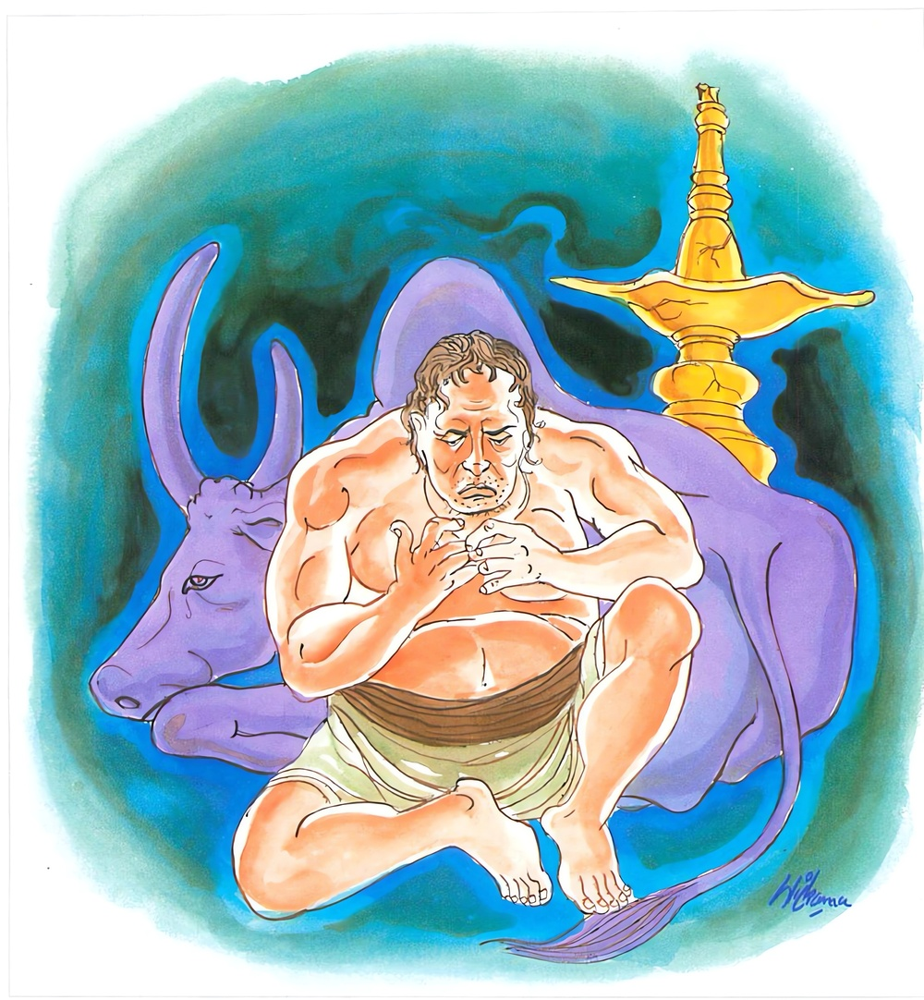

11-7 ලාලුදායි තෙරුන්ගේ බණ
මෙම කතාව ධම්මපද අටුවාවෙන් ද කියවන්න.
අප්පස්සුතායං පුරිසො බලිවද්දො’ව ජීරති.
මංසානි තස්ස වඩ්ඪන්ති පඤ්ඤා තස්ස න වඩ්ඪති.
(යටත් පිරිසෙයින් සූත්ර දෙකක් හෝ නොපුහුණු බැවින්) අල්පශ්රැත වූ මේ පුරුෂ තෙම (මවට වත් පියාට වත් සෙසු නෑයනට වත් කිසි ප්රයෝජනයක් පිණිස නො මුහුකුරා නිරර්ත්ථක ව ම මුහුකුරණ) ගොනකු මෙන් (උපාධ්යාය වතක් ආචාර්ය්ය වතක් ගිලන් වතක් නොකොට භාවනායෙක නොයෙදී නිරර්ත්ථක ව ම) මුහුකුරන්නේ ය. ඒ (හීයට නො නිසි යැ යි වලැ හැරැපු පාබුන් ගොන්මාල්ලකු වලැ ම කා හැවිද මස් වැඩී තර වැ ගියා මෙන් ආචාර්ය්ය උපාධ්යායාදීන් විසින් හරණ ලදු ව සඞ්ඝයාට උපන් සිවුපසය වළඳා වමන විරේචනාදියෙන් කායපෝෂණයෙහි නියුක්ත) මහණහට ශරීරමාංසයෝ ම වඩනාහ. ඔහුව (ලෞකික වූ ද ලෝකෝත්තර වූ ද) ප්රඥාව මඳකුදු නො වැඩේ.

ලාලුදායි තෙරණුවෝ මගුල් ගෙට ගොස් “තිරෝ කුඩ්ඩෙසු තිට්ඨන්ති” යි අවමගුල් ගෙයි කියන බණ කියති. අවමගුලට ගොස් “දානං ච ධම්මචරියා ච” යි මඞ්යගල සූත්රගාථාවක් හෝ “යං කිඤ්වි විත්තං ඉධ වා හුරං වා” යි රතන සූතගාථාවක් කියති. මෙසේ ඒ ඒ තැනට ගොස් “අනෙකක් කියමි” යි අනෙකක් කියන්නෝද “අනෙකක් කියමි” යි නො දනිත්. එ කල්හි භික්ෂූන් වහන්සේලා බුදුරජුන් වෙත ගොස් “ස්වාමීනි! ලාලුදායි තෙරණුවෝ උඩ බිම නො දැන බණ කියති. මගුලට ගොස් අවමගුල් බණ කියති. අවමඟුලට ගොස් මගුල් බණ කියති. තැන නො තැන ගැණ ඔහුට දැනුමක් නැත. තැන්නේ හැටි බලා බණ කියන්නට ලාලුදායි තෙරණුවෝ නො දනිති” යි බුදුරජානන් වහන්සේට දැන්වූහ. “මහණෙනි! ලාලුදායි පෙරත් ඔබඳු ය. තැනට ගැලපෙන ලෙසට යමක් කියන්නට නො දන්නේ ය. තැනට නො ගැළපෙන බණ කියන්නේ දැන් පමණක් නො වේ. ඉස්සර ද අනෙකක් කිය යුතු තැන අනෙකක් ම කීයේ” යි බුදුරජානන් වහන්සේ වදාළ විට භික්ෂූහු “ඒ කවදා දැ?” යි ඇසූහ.
යටගිය දවස බරණැස් නුවර අග්ගිදත්ත - සෝමදත්ත යි බමුණෝ දෙ දෙනෙක් වූහ. සෝමදත්ත, අග්ගිදත්තගේ පුත්ර ය. ඔහු රජගෙයි සේවා කම් කෙළේ ය. පියාට ප්රිය ය. පියාගේ මන වැඩුයේ ය. අග්ගිදත්ත ගොවිකමින් ජීවත් වූයේ ය. ගොවිතැන් වැඩ සඳහා ඔහුට ගොන්නු දෙ දෙනෙක් සිටියහ. අතරක ඉන් එකෙක් මළේ ය. එයින් ඔහුගේ ගොවිතැන නැවතුනේ ය. පුත් සෝමදත්ත ඒ අතර දවසෙක ගෙට ආයේ ය. එකල්හි ඔහු “සෝමදත්ත! මා වෙත සිටි ගොන් දෙන්නාගෙන් එකකු මළ බව තෝ නො දනිහි ද? ඉන් එකෙක් මළේ ය. එදා සිට මට කිසි වැඩෙක් නැත. කුඹුරු වැඩ නවතාලන්නට සිදු වී තිබේ. එහෙයින් අප මහරජතුමන්ගෙන් වත් ගොනකු ඉල්ලා දෙන්නැ” යි කී ය. සෝමදත්ත, “රජුගෙන් ගොනකු ඉල්ලීම මට තරම් නො වේ. ඒ මට මදිකමෙකි. මා පහත් එකකු බව ඉන් පැහැදිලි වන්නේ ය. රජතුමා මා පහත් එකකු කොට සිතන්නේ ය” යි සිතා “පියේ! ඒ ඉල්ලීම මා කරණ එක නා සුදුසු ය. මම එතැන සේවකයෙක්මි. තාත්තා රජතුමන් වෙත ගොස් වැඳ ගොනකු ඉල්ලා සිටින්නැ” යි කී ය. “එහෙනම් පුතේ මා රජු වෙතට කැඳවා ගෙණ යන්නැ” යි අග්ගිදත්ත කී විට සෝමදත්ත තෙමේ “අපේ තාත්තා මෝඩ ය. එන්න, යන්න, යන වචනය පමණකුත් හරිහැටි කියන්ට නො දනියි. අනෙකක් කිය යුතු තැන අනෙකක් ම කියයි. තැනට නිසි සේ කතා කරන්නට නො දනියි. එහෙයින් රජු වෙත යන්නට පෙරාතුව රජු ඉදිරියෙහි කතා කරණ සැටි උගන්වා පුරුදු කරවා ගෙණ යා යුතුය” යි සිතා අග්ගිදත්තයන් බීරණත්ථම්භක නම් සොහොන් බිමට කැඳවා ගෙණ ගොස් තණ කොළ එකතු කොට තණමිටි කීපයක් බැඳ ඒවා එක එක ගසට හේත්තු කොට ඉන් පසු ඔහු ඒ ඒ තැණට ගෙණ ගොස් මේ රජතුමා ය. මේ යුවරජ ය. මේ අගමැති ය. මේ සෙනෙවිය යි යන ඈ ලෙසින් නම් කොට පියාට පෙන්වා රජගෙට ගිය කල්හි මේ ලෙසින් ඉදිරියට යෑ යුතු ය. මේ ලෙසින් පස්සට යෑ යුතු ය. රජු ඉදිරියේ මෙසේ සිටිය යුතු ය. රජුට මෙසේ කිය යුතු ය. යුවරජුට මෙසේ කිය යුතු ය. රජු වෙත ගිය ඇසිලෙහි ම දෙයත් එකතු කොට “මහරජතුමනි! ඔබ වහන්සේට ජය වේවායි කිය යුතුය” යි පළමු කොට උගන්වාපී ය. නැවත;
“මහරජුනි! ගොවිකම් - කෙළෙමි මම් යම් ගොන්ගෙන්,
මළේ උන්ගෙන් එක් ගොන් - දෙනු මැන දෙවන ගොනකු”
යාන ගය බැඳ දුන්නේ ය. අග්ගිදත්තට මේ ගය කටට හුරු කර ගන්නට අවුරුද්දක් ගත වී ය, අවුරුද්දක් ගෙවා කට පාඩම් කොට ගෙණ ඒ බව පුතුට දැන් වී ය. එ කල්හි ඔහු පුත් සෝමදත්ත “හිස් අතින් රජු ඉදිරියට යැම නො සුදුසු ය. ගුරුවරයකු රජකු ඇමැතියකු වෙදකු වැඩිහිටියකු වැදගතකු හමුවීමට යන කල්හි හිස් අතින් යෑම මනුෂ්ය ධර්මයෙක් නො වේ. එහෙයින් රජගෙට ගෙණ යෑමට පඩුරක් පිළියෙල කර ගෙණ එහි යන්න. මම මදක් කලින් ගොස් රජු ඉදිරියෙහි පෙනී සිටින්නෙමි” යි කීයේ ය. අග්ගිදත්ත “ඒ යහපතැ” යි ගිවිස පඬුරකුත් ගෙන සෝමදත්ත රජු ඉදිරියෙහි පෙණී සිටි ඇසිල්ලෙහි රජු වෙත එළඹියේ ය. රජ තෙමේ ද ඔහු සතුටින් පිළිගෙණ “වාඩි ගන්නැ” යි කියා “මෙහි ආවෙහි කුමක් නිසා ද? වුවමනා කුමක් ද?” යි ඇසී ය. එවිට ඔහු;
“මහරජුනි! ගොවිකම් - කෙළෙමි මම් යම් ගොන්ගෙන්,
මළේ උන්ගෙන් එක් ගොන් - ගණු දෙවන ගොන් කැත්රද!”
අසන මේ ගය කී ය. “තෝ කුමක් කියහි” යි රජු ඇසූ විට ඔහු නැවතත් එය ම කීයේ ය. ඉක්බිති රජ තෙමේ ඔහු එය වරදා කී බව සිතට ගෙණ, සිනහ පහළ කොට “සෝමදත්ත! නුඹලාගේ ගෙදර බොහෝ ගොන්නු සිටිති” යි කී ය. “දෙවයන් වහන්ස! ඒ ගොන්නු ඔබ වහන්සේ විසින් ම දෙන ලද්දෝ වෙති” යි සෝමදත්ත කී විට ඔහු කෙරෙහි පැහැද බමුණාහට ගොනුන් සොළොස් දෙනකුන් හා රෙදි පිළි අබරණ බොහෝ කොට දී උන් විසූ ගම ද පමුණු ගම් කොට දෙවා පිටත් කොට යැවී ය, යි මේ පුවත වදාළ බුදුරජානන් වහන්සේ නැවත “එ දවස රජ වූයේ ආනන්ද තෙමේ ය. අග්ගිදත්ත බමුණු වූයේ ලාලුදායි ය. සෝමදත්ත වූයේ මමැ” යි ජාතකය ගළපා “ලාලුදායී පෙරත් ඔබඳු ය. එදාත් තමන්ගේ මෝඩකම නිසා කිය යුත්ත හැර අනෙකක් ම කී ය. කිසිත් ධර්ම ශාස්ත්රයක් නුගත් මෝඩයා ගොනකු සමාන ය” යි මේ දේශනාව කළ සේක.
අප්පස්සුතායං පුරිසො බලිවද්දො ව ජීරති,
මංසානි තස්ස වඩ්ඪන්ති පඤ්ඤා තස්ස න වඩ්ඪතී ති.
ඇසූ විරූ ධර්ම ශාස්ත්රය නැති මේ පුරුෂ තෙමේ ගොනකු සේ දිරයි. ඔහුගේ මස් වැඩේ. නුවණ නො වැඩේ.
අප්පස්සුතායං පුරිසො = උගත් කම් නැති පුරුෂ තෙමේ.
‘අප්පස්සුතො අයං’ යනු පදච්ඡෙදයි. මූලපණ්ණාසකාදී වූ එක් පණ්ණාසකයක් හෝ දෙවගක් එක් වගක් හෝ යටත් පිරිසයින් එක් සූත්රයක් හෝ පුහුණු නො කළ නො ද උගත් තැනැත්තේ කමටහන් උගෙණ එහි නොයෙදුනේත් අප්පස්සුත නම්. “අප්පස්සුතොති අත්තනො පරෙසං ච හිතාවහෙන සුතෙන විරහිතොති අත්ථො” තමන්ටත් අනුන්ටත් හිත වැඩ එළවන්නා වූ ධර්මශාස්ත්රාදිය ඉගෙණීමෙන් තොර වූයේ අප්පස්සුත යි කොටින් කිය යුතු ය.
බලිවද්දො ව ජීරති = ගොනකු සේ දරයි. මෝරා යයි.
බල වඩන්නෝ බලිවද්ද නම්. ගොනා ය කිසිත් හසරක් නො දත්තේ, කුසල් අකුසල් නො දත්තේ, යුතු අයුතු නො දත්තේ, වගකීමෙන් තොර වූයේ හුදෙක් බල වඩන්නේ ය. එහෙයින් ඔහු ගොනකු වැනිය යි කීයේ මෙහි වූ ‘ ඉව’ යන නිපාතයෙනි.
මංසානි තස්ස වඩ්ඪන්ති = ඔහුගේ මස් වැඩේ.
මස් පමණක් නො ව ඔහු පිළිබඳ ඇට සම් නහර ඇටමිදුලු ආදී වූ හැම එකක් ම වැඩේ.
පඤ්ඤා තස්ස න වඩ්ඪති = නුවණ නා වැඩේ.
මවට පියාට අන් නෑයකුට වැඩක් නැති, නිකම් කා බී වැඩෙන ගොනකු මෙන් නූගත් මිනිහා කමින් බොමින් අඳිමින් පලඳිමින් නිදමින් මවට පියාට අන් නෑයකුට වැඩක් නැති ව වැඩෙන්නේ ය. උපාද්ධ්යායවතක් ආචාර්ය්යයවතක් ආගන්තුකවතක් ගිලන්වතක් නො කරන්නේ ය. භාවනාවක නො යෙදෙන්නේ ය. නිරර්ත්ථක ව ම වැඩෙන්නේ ය. මෝරන්නේ ය. කිසිවකටත් නො නිසි බැවින් හැර දැමූ පා බුන් ගොන් මාල්ලකු වනයෙහි ඇවිද කා බී මසින් ලෙයින් තරව යන්නා සේ මේ නූගත් මිනිහා ද ආචාර්ය්යොපාද්ධ්යයන් විසින් හරණ ලදු ව සඞ්ඝයාට උපන් සිව්පසය කා බී වමන විරේචන ආදියෙන් කය වඩා මසින් ලෙයින් තර වන්නේ ය. මසින් වැඩෙන්නේ මහත් සිරුරු ඇත්තේ වන්නේ ය. එහෙත් ඔහුගේ නුවණ නම් යන්තමකිනුත් නො වැඩේ. වනයෙහි ගස් වැල් ඈ වැඩෙන්නා සේ ඇස් - කන් - නාස් ඈ සදොර නිසා පවත්නා තණ්හා මානාදී වූ කෙලෙස් තර වේ. මහත් වේ. මස් තර වන පමණටත් වැඩියෙන් කෙලෙස් තර වේ.
ධර්මදේශනාවගේ අවසානයෙහි බොහෝ දෙන සෝවාන් ඵලාදියට පැමීණියෝ ය.
ලාලුදායීස්ථවිර වස්තුව නිමි.